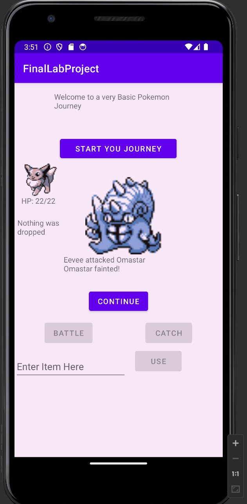
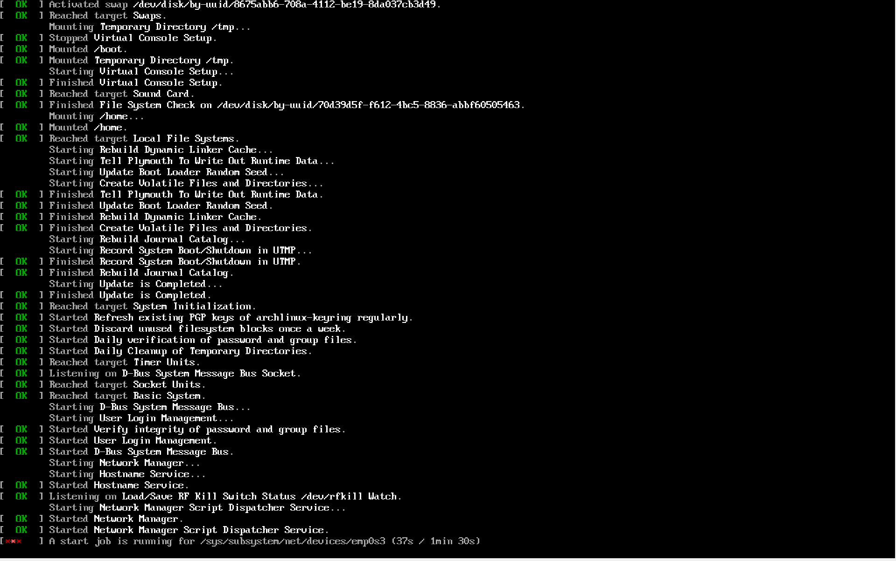

The first project I am proud of is my Final Project for Intro to CS where I built a very basic Random Pokemon Generator where the entire Professor Oak speech from Pokemon Red/Blue and you where able to catch and evolve pokemon. The only regret I have is that I code each of the original 151 + a few extras in a giant Basic Array.
Another project was when the Course: Modern Operating Systems showed me how to use Virtual Box Virtual Machine Software. So I used that information to build myself one of the more difficult Linux Operating Systems: Arch Linux. I have no regrets with this one because that was a test run because for a long time I've been thinking about switching from Windows to Linux, so I would want to learn the the process of doing so when I eventually do switch.
